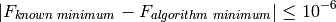

AMPGO stands for Adaptive Memory Programming for Global Optimization, an algorithm I found on the web and I implemented in Python.
A generic and basic description of the algorithm, together with a number of sensitivities on the input parameters for the Python function, are described in the dedicated The AMPGO Solver page.
 Introduction¶
Introduction¶These HTML pages contain a series of benchmarks to test a number of numerical Global Optimization algorithms; the algorithms are applied to multi-modal/difficult univariate and multi-dimensional test functions.
This effort stems from the fact that I got fed up with the current attitude of most mathematicians/numerical optimization experts, who tend to demonstrate the advantages of an algorithm based on “elapsed time” or “CPU time” or similar meaningless performance indicators.
I deal with real-life optimization problems, as most of us do.
Most real life optimization problems require intensive and time consuming simulations for every function evaluation; the time spent by the solver itself doing its calculations simply disappears in front of the real process simulation. I know it because our simulations take between 2 and 48 hours to run, so what’s 300 seconds more or less in the solver calculations?
 The Rules¶
The Rules¶In order to be eligible for the competition, a Global Optimization algorithm must satisfy the following constraints:
It should run on my PCs, equipped with Windows 7 64 bit and Python 2.7 64 bit. This means that the algorithm should be coded in pure Python, or the developer should provide a Windows installer, or it should be of easy compilation using standard Python tools plus Visual Studio, Intel Fortran and f2py.
See The Great Excluded section for a few examples of algorithms written by people living in their dream world.
No gradient-based procedures allowed: the problems I deal with in real life are so horrendously complex that you can’t even mention the word “gradient”. Derivative-free algorithms only.
No unconstrained optimization routines allowed: I mostly care about box-bounded problems, so the algorithm should support bounds on independent variables as a minimum condition for eligibility.
The test suite is executed in the following manner:
Every optimization algorithm is fed with all the test functions, using 100 different random starting points. For any test function, the starting point is the same for all the algorithms.
Benchmark repeatability is enforced through the use of the same random seed every time the test suite is run.
No tuning of parameters is allowed: all the algorithms have been run with their default settings, irrespective of the dimensionality of the problem, the starting point or any other consideration.
The maximum number of function evaluations is set to 2,000, irrespective of the algorithm, the dimensionality of the problem, the starting point or any other consideration. This is non-negotiable.
If this limit is exceeded, the test is considered as “failed”. Otherwise the number of function evaluations reported by the algorithm is recorded for later statistical analysis.
All the test functions have known global optimum values: I considered an algorithm to be successful if:

While still respecting the condition at point (2).
 Test Functions¶
Test Functions¶All the test functions have been taken from the mathematical literature on Global Optimization. The test suite currently contains:
The index of the test function is in Test Functions Index page: as the list is quite large, their definition has been split into multiple pages using the first letter of their name. Whenever possible, a 2D or 3D plot of the test function has been provided.
Note
If you wish to contribute to the test suite (i.e., to add a new benchmark problem), please do send me an email to andrea.gavana@gmail.com, I’ll integrate your contribution with due credits and I will re-run the algorithms comparison.
 The Great Excluded¶
The Great Excluded¶This section presents a (possibly incomplete) list of algorithms/libraries that have been excluded from the benchmark competition, as they do not comply with one or more of the rules spelled out in The Rules section.
ALGENCAN: praised by many for its robustness and convergence qualities, you can get a copy of the source code from here:
http://www.ime.usp.br/~egbirgin/tango/codes.php
Unfortunately, no Windows installer is available and the code is not easily compilable on Windows.
Fail.
PyGMO: based on the C++ code of PaGMO, it contains a lot of different optimizers and seems very promising:
http://pagmo.sourceforge.net/pygmo/index.html
Unfortunately, the Windows version is 32 bit-only, and compilation seems to be a very problematic matter.
Fail.
 Tested Algorithms¶
Tested Algorithms¶I have tried a number of global optimization algorithms on the entire set of benchmarks, considering bound constrained problems only, and specifically the following ones:
AMPGO: Adaptive Memory Programming for Global Optimization: this is my Python implementation of the algorithm described here:
I have added a few improvements here and there based on my Master Thesis work on the standard Tunnelling Algorithm of Levy, Montalvo and Gomez. A generic and basic description of the algorithm, together with a number of sensitivities on the input parameters for the Python function, are described in the dedicated The AMPGO Solver page.
BasinHopping: Basin hopping is a random algorithm which attempts to find the global minimum of a smooth scalar function of one or more variables. The algorithm was originally described by David Wales:
CMA-ES: Covariance Matrix Adaptation Evolution Strategy, based on the following algorithm:
http://www.lri.fr/~hansen/cmaesintro.html
http://www.lri.fr/~hansen/cmaes_inmatlab.html#python (Python code for the algorithm)
CRS2: Controlled Random Search with Local Mutation, as implemented in the NLOpt package:
DE: Differential Evolution, described in the following page:
http://www1.icsi.berkeley.edu/~storn/code.html
The Python algorithm is implemented in OpenOpt.
DIRECT: the DIviding RECTangles procedure, described in:
http://ab-initio.mit.edu/wiki/index.php/NLopt_Algorithms#DIRECT_and_DIRECT-L (Python code for the algorithm)
Firefly: the Firefly algorithm, this is my Python implementation of the procedure described here:
http://www.mathworks.com/matlabcentral/fileexchange/29693-firefly-algorithm
Galileo: Genetic Algorithm-based optimization solver. The Python algorithm is implemented in OpenOpt.
MLSL: Multi-Level Single Linkage algorithm, implemented in NLOpt and described here:
http://ab-initio.mit.edu/wiki/index.php/NLopt_Algorithms#MLSL_.28Multi-Level_Single-Linkage.29
PSWARM: Particle Swarm optimization algorithm, it has been described in many online papers. I have used the version available in OpenOpt, via a previous compilation of the C source code from:
SCE: Shuffled Complex Evolution, described in:
Duan, Q., S. Sorooshian, and V. Gupta, Effective and efficient global optimization for conceptual rainfall-runoff models, Water Resour. Res., 28, 1015-1031, 1992.
The version I used was graciously made available by Matthias Cuntz via a personal e-mail.
SIMANN: The scipy version of Simulated Annealing, which can be found in scipy.optimize.anneal. Some docs here:
http://docs.scipy.org/doc/scipy/reference/generated/scipy.optimize.anneal.html
Note
Please feel free to contact me if you think I have missed one (or more) algorithm/library, or if you have a procedure you would like to benchmark against. Do send me an email to andrea.gavana@gmail.com, I’ll integrate your contribution with due credits and I will re-run the algorithms comparison.
 Indices and tables¶
Indices and tables¶